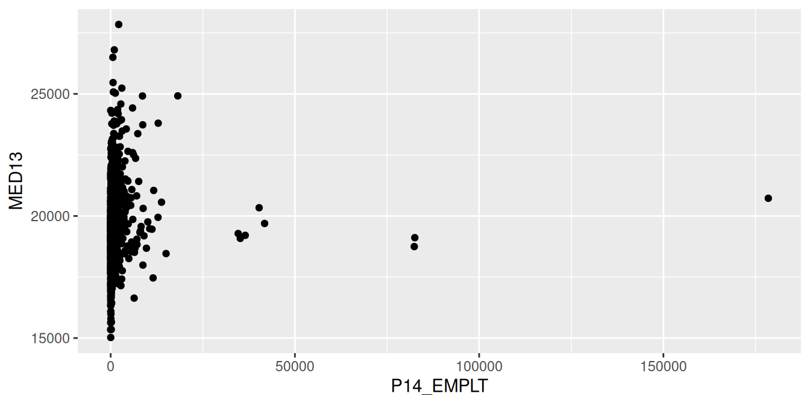
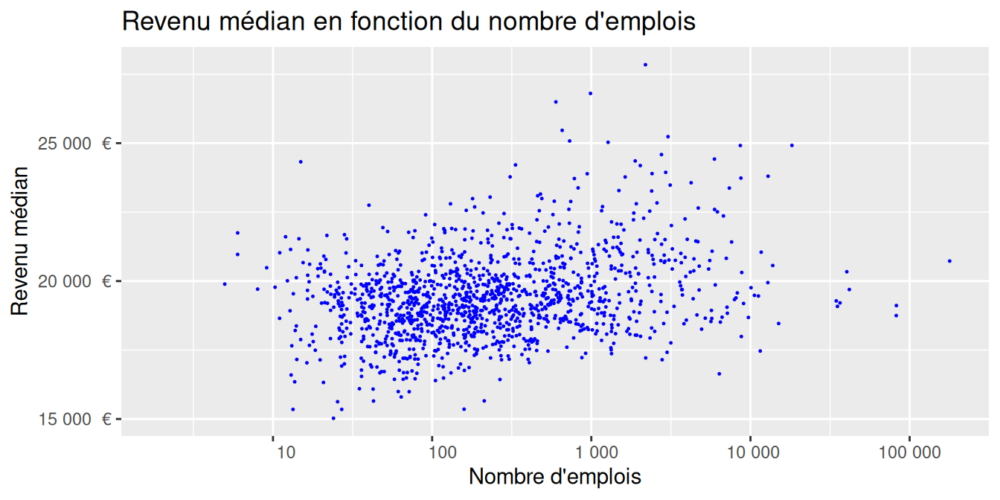
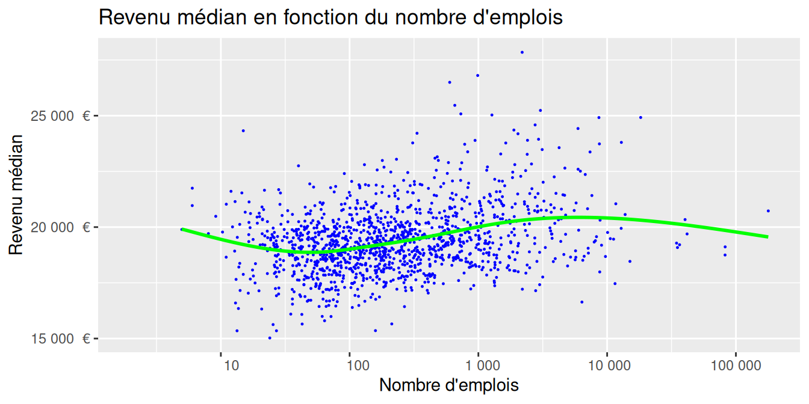
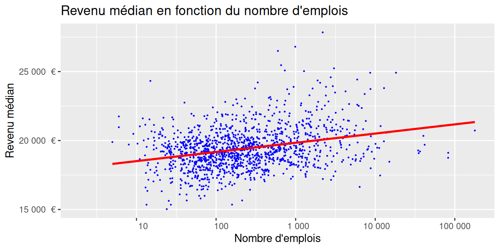
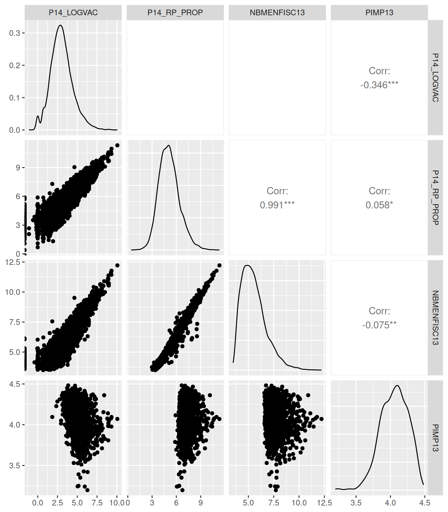
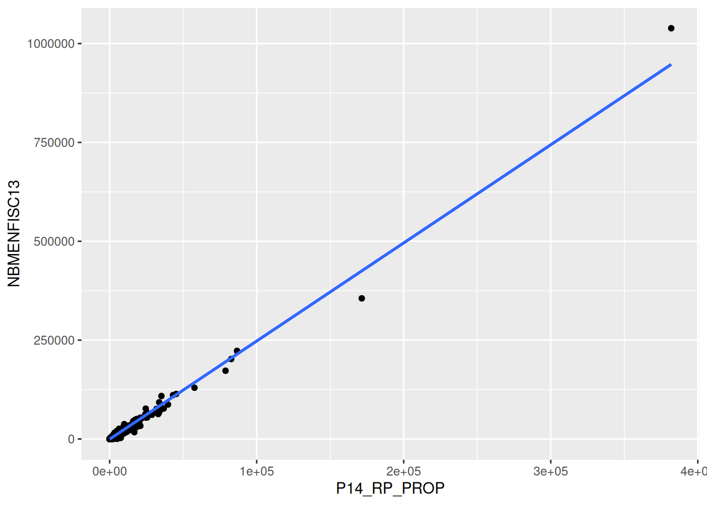

Chapitre 6 Deux variables quantitatives
On cherche à quantifier le lien entre deux variables quantitatives X et Y sur un échantillon de n individus. Par exemple : le lien entre les revenus médians et le nombre d’emploi au lieu de travail des communes.
Plusieurs coefficient permettent de quantifier ce lien :
- Coefficient de corrélation linéaire (Pearson) : \(\rho_{XY}=\dfrac{\sigma_{XY}}{\sigma_{X} \cdot \sigma_{X}}\) avec \(\sigma_{XY} = \dfrac{1}{n}\sum_{i=1}^n (x_i-\bar{x})(y_i-\bar{y})\) et \(\sigma_x\) l’écart-type de X.
- Coefficient de corrélation des rangs (Spearman) : c’est le coefficient précédent appliqué aux rangs \(\Rightarrow\) détecte des relations non linéaires
Dans certains cas (distributions asymétriques), il faut penser à appliquer la transformation logarithmique
6.1 Représentations graphiques
Des représentations graphiques permettent de visualiser d’éventuels effets entre variables, qu’il faudra ensuite étudier plus précisemment en les quantifier.
6.1.1 Nuage de points
Un croisement de deux variables quantitatives peut se faire facilement avec un nuage simple (geom_point()):
dat_pays_loire <- dat %>% filter(REG == "52")
ggplot (data = dat_pays_loire, aes (x = P14_EMPLT, y = MED13)) +
geom_point () ## Warning: Removed 159 rows containing missing values or values outside the scale range
## (`geom_point()`).
On peut ajouter un peu de mise en forme :
g <- ggplot (data = dat_pays_loire, aes (x = P14_EMPLT, y = MED13)) +
geom_point (colour = "blue", cex = 0.2) +
ggtitle ("Revenu médian en fonction du nombre d'emplois") +
ylab ("Revenu médian") +
xlab ("Nombre d'emplois") +
scale_x_continuous (trans = 'log10',
breaks = c(0,1,10,100,1000, 10000, 100000, 1000000),
labels = function(x) format(x, big.mark = " ", scientific = FALSE)) +
scale_y_continuous (labels = function(x) paste (format (x, big.mark = " ",
scientific = FALSE), " €"))
g## Warning: Removed 159 rows containing missing values or values outside the scale range
## (`geom_point()`).
Les fonctions scale_._continous() permettent de modifier les echelles des axes. Ici, nous avons effectué une transformation logarithmique de l’axe des X.
Pour visualiser, sans a priori sur sa forme, la relation entre X et Y (elle n’est pas forcément linéaire) on peut appliquer une fonction de lissage avec geom_smooth.

Si on veut la droite de régression, c’est aussi la fonction geom_smooth en ajoutant l’argument method = "lm".

6.1.2 Matrice de nuages de points
Une matrice permet d’afficher plusieurs nuages de points d’un coup. Cela est pratique quand on explore un jeu de données avec différentes variables susceptibles d’êtres corrélées entre elles. Elle s’obtient avec la fonction ggpairs() (du package GGally).
num <- select (dat, P14_LOGVAC:PIMP13) %>%
sample_n (10000) %>% # On sélectionne quelques données
log ()
ggpairs (num) # package "GGally nécessaire"
6.2 Coefficients de corrélation
Le coefficient de corrélation entre deux variables quantifie l’intensité de la liaison entre ces variables. Il varie entre +1 et -1. S’il est proche de zéro, il n’y a pas de liaison, les variables sont indépendantes l’une de l’autre. S’il est de signe positif, les variables ont tendance à varier dans le même sens, c’est-à-dire que quand l’une augmente, l’autre tend aussi à augmenter. S’il est négatif, quand l’une augmente l’autre tend à diminuer.
Le coefficient de corrélation linéaire classique, par défaut dans la fonction cor() est celui de Pearson. Attention, il est très sensible aux valeurs extrêmes et il ne rend pas bien compte des relations non linéaires.
Il entre dans la catégorie des outils paramétriques, donc attention à son interprétation quand les variables ne sont pas distribuées selon une loi normale.
\(r=\dfrac{Cov(X,Y)}{\sigma_X\times\sigma_Y}\)
## P14_LOGVAC P14_RP_PROP NBMENFISC13 PIMP13
## P14_LOGVAC 1.0000000 0.79318194 0.86332994 -0.34559132
## P14_RP_PROP 0.7931819 1.00000000 0.96434007 0.05767302
## NBMENFISC13 0.8633299 0.96434007 1.00000000 -0.07776152
## PIMP13 -0.3455913 0.05767302 -0.07776152 1.00000000## P14_LOGVAC P14_RP_PROP NBMENFISC13 PIMP13
## P14_LOGVAC 1.0000000 0.74825063 0.82937190 -0.36242891
## P14_RP_PROP 0.7482506 1.00000000 0.95926615 0.06563626
## NBMENFISC13 0.8293719 0.95926615 1.00000000 -0.08164347
## PIMP13 -0.3624289 0.06563626 -0.08164347 1.00000000Pour tester si vous arrivez bien à estimer à l’oeil l’intensité du lien linéaire entre deux variables, un peu d’entraînement sur cette appli shiny ou celle-ci.
Quand la relation n’est pas linéaire, on peut utiliser en alternative le coefficient de corrélation de Spearman. Celui-ci est basé sur les rangs. Il permet donc de mettre en évidence des relations non linéaires (pour peu qu’elles soient monotones) entre les deux variables.
## P14_LOGVAC P14_RP_PROP NBMENFISC13 PIMP13
## P14_LOGVAC 1.0000000 0.70420924 0.8180572 -0.40045625
## P14_RP_PROP 0.7042092 1.00000000 0.9391915 0.05491872
## NBMENFISC13 0.8180572 0.93919148 1.0000000 -0.10058108
## PIMP13 -0.4004562 0.05491872 -0.1005811 1.00000000Quelques exemples de comparaison entre les corrélations de Pearson et de Spearman ici
6.3 Régression
Le principe de la régression est de décrire la manière dont une variable est dépendante d’une autre variable. À la différence de la corrélation, où on cherche à quantifier la manière dont 2 variables s’oriente l’une par rapport à l’autre, la régression a pour objectif d’estimer les valeurs d’une variable en connaissant les valeurs d’une autre variable. Le modèle usuel de régression linéaire est : \(y = \beta_0 + \beta_1 x + \varepsilon\), avec :
\(y\) variable à expliquer
\(x\) variable explicative
\(\varepsilon\) un terme d’erreur aléatoire de loi normale, d’espérance nulle et d’écart-type σ.
On veut une estimation des coefficients \(\beta_0\) et \(\beta_1\).
Sur R, on se sert de la fonction lm() pour créer un modèle (“linear model”). Cet objet permettra d’accéder à plusieurs informations de la régression.
##
## Call:
## lm(formula = NBMENFISC13 ~ P14_RP_PROP, data = dat)
##
## Residuals:
## Min 1Q Median 3Q Max
## -69374 -22 210 312 91368
##
## Coefficients:
## Estimate Std. Error t value Pr(>|t|)
## (Intercept) -4.199e+02 5.955e+00 -70.52 <2e-16 ***
## P14_RP_PROP 2.482e+00 2.071e-03 1198.05 <2e-16 ***
## ---
## Signif. codes: 0 '***' 0.001 '**' 0.01 '*' 0.05 '.' 0.1 ' ' 1
##
## Residual standard error: 1052 on 32187 degrees of freedom
## (4500 observations deleted due to missingness)
## Multiple R-squared: 0.9781, Adjusted R-squared: 0.9781
## F-statistic: 1.435e+06 on 1 and 32187 DF, p-value: < 2.2e-16On peut encore une fois visualiser la droite de régression grâce à la fonction geom_smooth()
ggplot(data = dat, aes(x = P14_RP_PROP, y = NBMENFISC13)) +
geom_point() +
geom_smooth(method = "lm", se = FALSE)## `geom_smooth()` using formula = 'y ~ x'